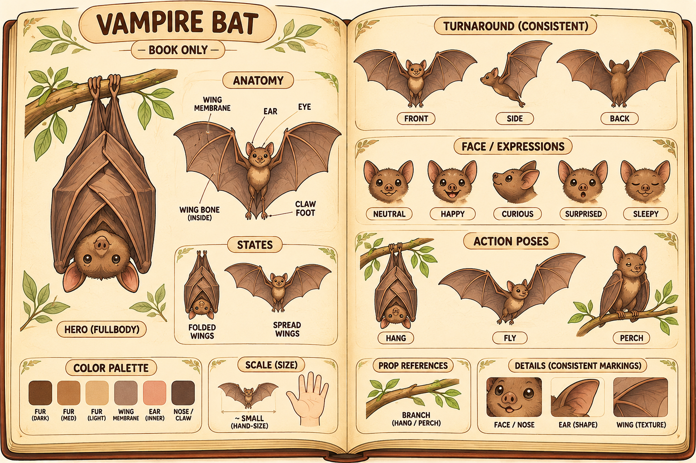

214–229, 230–243, 244–253의 세 배치. 비에 젖은 Jack·Annie, Peanut은 주머니에서 240번 숲바닥으로 이동한다. 박쥐는 책 속 그림과 설명 전용이며 실제 박쥐 공격은 추가하지 않는다. 밤이 가까워지는 어두운 숲, 길을 잃음, Peanut의 흰 줄 이동과 나무집·사다리 발견 순서를 유지한다. 4×4 실제 경계를 검출하고 크롭을 검수한다.
